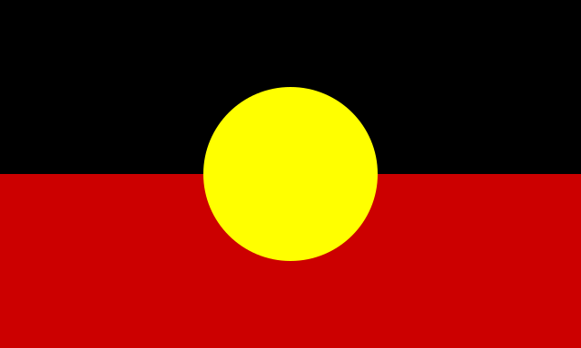

The origin of the national flag

1. Union Jack (Union Flag) Crossed Blue Cross:
The Union Jack on the Australian flag represents the historical and colonial ties with Britain.
This part, often referred to as the Union Flag, signifies Australia's connection as part of the British Commonwealth.
2. Southern Cross:
In the top left corner of the flag (when hoisted), there is a white representation of the Southern Cross constellation, consisting of four seven-pointed stars, symbolizing the stars of the southern hemisphere. This symbolizes Australia's location in the southern hemisphere.
3. Federation star:
In the bottom left corner of the flag (when hoisted), there is a seven-pointed star representing the six states and two territories that collectively form the federation of Australia. This star, commonly known as the Federation Star, symbolizes the national unity of Australia.
The design of the Australian flag was determined through an open design competition. On April 29, 1901, the Australian government announced a public competition to design the Australian flag, and from over 30,000 entries, five finalists were selected. One of them was the design by Ivor Evans, which eventually became Australia's flag.
Thus, the Australian flag consists of symbols representing its historical ties with Britain, its geographical location, and its political federation, embodying Australia's history, geography, and politics.
The Australian Aboriginal Flag

The Australian Aboriginal Flag was designed in 1971 by Aboriginal artist Harold Thomas, a descendant of the Luritja people from Central Australia.
He holds the intellectual property rights to the flag's design. The flag was originally designed for the land rights movement and has become a symbol of the Australian Aboriginal people.
Black:
Representing Australian Aboriginals.
Yellow circle:
Representing the sun, the giver and protector of life.
Rad:
Representing red earth, red ocher used in ceremonies and Aboriginal spiritual relationships with the land.
Torres Strait Islander flag
The Torres Strait Islander flag is one of the official flags of Australia and is the flag representing the Torres Strait Islander people.
It was designed by Bernard Namoc in 1992. It won a local competition held by the Island Coordinating Committee and was recognized by the Aboriginal and Torres Strait Islander Council in June 1992.
Green:
Representing the land.
Blue:
Representing Torres Strait.
Black:
Representing Torres Strait Islanders.
White:
There is a five-pointed star and the local traditional dance headdress Dhari (also called dari). The five-pointed star symbolizes the five major island groups of the islanders (eastern, western, central, Port Kennedy, and the main island) and also has navigational significance.
Western Australia state flag
With a Blue Ensign as the base, the right side of the flag features a yellow circle containing a black swan motif. The current version was adopted on November 3, 1953, and is similar to the flag used when the state was still a British colony.
From 1870 to 1953, the black swan motif on the Western Australia state flag faced the opposite direction to the current design. The current design aligns with vexillological convention, making the swan face the "hoist." The state flag of Western Australia is similar to the flags of the other five states of the Australian Federation, being a Blue Ensign with the state's emblem.